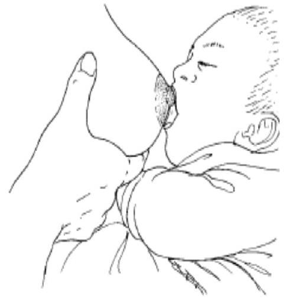
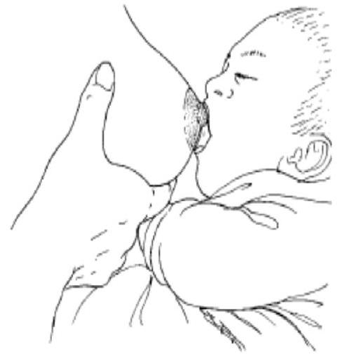

CHAPTER 3: COMMON CLINICAL PROCEDURES PERFORMED ON NEWBORNS
3.1 Newborn Resuscitation
- Each newborn should be delivered by a qualified health worker
- All high-risk mothers should be identified before child-birth.
- There should be two competent health workers available at delivery to provide both immediate newborn care (including resuscitation for babies with no spontaneous respiration) and care of the mother.
Image from https://airwayjedi.com/2017/03/26/manual-ventilation-self-inflating-vs-free-flow-bag
3.1.1 Items required
| - Prewarmed radiant warmer with a temperature probe | - $200-300 \mathrm{ml}$ Bag valve mask (BVM) device |
| - 2 Warm and sterile towels or blankets | - Different sizes (00, 0,1,2) BVM Masks |
| - Hat | - Oxygen source and oxygen tubing |
| - Plastic bag or plastic wrap (for preterm infants <32 weeks' gestation) | - Neonatal size nasal prongs and non-rebreather mask |
| - Clock | - Stethoscope |
| - Penguin sucker or bulb sucker | - Pulse oximeter |
| - Size 6 or 8 Suction catheters with a functioning suction machine | - Alcohol based hand rub & gloves |
3.1.2 Steps to follow during newborn resuscitation (see section 1.1)
Step 1 Ensure safety;
- Warm delivery room $\left(25-28^{\circ} \mathrm{C}\right)$
- Observe hand hygiene and use of gloves protocol
- Ensure availability of essential drugs and equipment as per the check list above
- Ensure the environment is safe i.e. clean, there are no sharps or clinical waste lying on surfaces or floor, there are no broken pieces of devices lying on surfaces where resuscitation will be performed
- Ensure the suction machine is ready for use - clean, pressure set $80-100 \mathrm{mmHg}$, suction tubes and wide bore catheter ready for use. Test if suction machine is working (see section 2.2)
- Prepare the radiant warmer for use: (see section 2.1)
- Ensure the radiant warmer is clean and the mattress is covered with a clean linen
- Plug power cable to the machine
- Plug temperature probe into baby probe port on the machine.
- Turn on the machine
- Test the temperature probe and place it on the mattress
- Select the pre-warm mode and place the two towels on the mattress at least 5 min before receiving the baby
- Turn on the examination light
- Start APGAR timer on as soon as baby is born
Step 2 Perform initial steps in stabilization
- Dry and stimulate the baby, while on the mother's abdomen. Remove the wet towel and cover with a warm dry towel
- Assess; is the baby crying/breathing? Does the baby have a good tone?
- If No to any of these, immediately cut the cord and place the baby in the middle of the long axis of the radiant warmer mattress and stand at the foot of the radiant warmer
Step 3 Airway
- Open the airway into the slightly extended (sniffing) position using the head tilt and chin lift maneuver and look into the mouth
- If there are secretions, suction only what is visible. See section 2.2.6
Step 4 Breathing
- Look, listen and feel for breathing for 5 seconds.
- Look at the chest for movements
- Listen for breath sounds
- Feel for warm air on your cheek
- If the baby is not breathing, shout for help and begin ventilations;
- Size for the correct BVM mask to use - should cover nose and mouth
- Using room air
- Give 40-60 continuous ventilations in 60 seconds ensuring a good C & E grip. To maintain a good rate count out loud 'BREATH, TWO THREE'.
- Ensure the chest rises
Image Source: Resuscitation and stabilization of babies born preterm. In: Weiner GM, Zaichkin J, eds. Textbook of Neonatal Resuscitation. 7th ed. Elk Grove Village, IL: American Academy of Pediatrics; 2016:225-241
Step 5 Circulation
- Feel the umbilical cord stump for pulsation for 5-10 seconds.
- If the heart rate is above 60beats/min, continue 40-60 ventilations for another 60 seconds then reassess Airway, Breathing & Circulation. If the airway is clear and spontaneously breathing, put on oxygen via nasal prongs at $0.5 \mathrm{~L} / \mathrm{min}$. Titrate oxygen flow rate to achieve the desired $\mathrm{SpO}_{2}$
- If the heart rate is below 60beats/min, begin chest compressions at a rate of 3 compressions to 1 ventilation for 1 -minute. Rescuer 1 should give ventilations and Rescuer 2 should give chest compressions!
- When giving chest compressions;
- Use the 2-thumb hand encircling technique
- Locate and give the compressions on the lower $1 / 3$ of the sternum
- Compress 1/3rd of the anterior posterior (AP) diameter
- Allow for chest re-coil
- As you start compression connect BVM to $\mathbf{100 \%}$ oxygen
- To ensure 120 events $/ \mathrm{min}$ (90 compressions and 30 ventilations) say aloud the phrase - 'ONE and TWO and THREE and BREATH'
Image borrowed from https://www.semanticscholar.org/paper/Cardiopulmonary-resuscitation-(CPR)-related-rib-in-Franke Pingen/ b69fc74ba1e10861c8dd68f7b99f76779e28e85a/figure/0 Neonatal Resuscitation2015 American Heart Association Guidelines Update for Cardiopulmonary Resuscitation and Emergency Cardiovascular Care
Step 6 Reassess Airway, Breathing & Circulation after 1 minute. Repeat the steps until return of spontaneous breathing & circulation.
Step 7 Give oxygen
- Administer oxygen using nasal prongs at $0.5-1 \mathrm{~L} / \mathrm{min}$ if baby did not require chest compression
- Administer oxygen using a non-rebreather mask at $10-15 \mathrm{~L} / \mathrm{min}$ if chest compression $100 \%$ oxygen.
Step 8 Ensure the baby is kept warm (see section 2.1.9)
- Locate site to place and secure the temperature probe on the baby
- Change the radiant warming mode from prewarm to baby mode (also called servo or automatic mode).
- Set the desired skin temperature between $36.5-37.5^{\circ} \mathrm{C}$
- For asphyxiated babies: Reduce the heat of the radiant warmer to $0 \%$ or or as per hospital policy for therapeutic cooling
Step 9 Monitor $\mathrm{SpO}_{2}$
- Connect to pulse oximeter (see section 2.6.6)
- Titrate oxygen flow rate to achieve the desired $\mathrm{SpO}_{2}$.
- When baby is stable, provide Essential Newborn Care and Family Centered Care.
- Document care provided
3.2 Use of Plastic Wraps for Preterms less than 32 weeks at birth
Preterms less than 32 weeks should be resuscitated using the same steps as listed in section 3.1 above except initial stabilization. The preterms will not be dried but will be wrapped in a plastic to keep the baby warm.
3.2.1 Items required
- Polyethylene paper/wrap - transparent, low density (saran), 50 cm wide. Can be commercial or food grade cling film
- Cord clump
- Hat
- Stethoscope
- Radiant warmer
- Clean gloves & surgical masks
3.2.2 Steps to follow when using plastic wraps
- Ensure the delivery room is warm $\left(25^{\circ} \mathrm{C}-28^{\circ} \mathrm{C}\right)$ and draught free
- Spread the occlusive plastic wrap over the bed of the pre-warmed radiant warmer. Do not allow plastic to overheat if under a radiant warmer. Place on radiant warmer 5-10min before the expected delivery then place the prewarmed plastic wrap on the mother's side (for C/S consider other IPC measures).
- Receive & carefully place the newborn on the occlusive plastic wrap without drying and fold the wrap over the infant covering the entire body excluding the head (fig 3.2.2)
- Dry the head and cover it with a hat.
- Transfer the baby immediately to the radiant warmer. Perform clinical assessment and resuscitation interventions through the plastic wrap/bag.
- Attach temperature probe skin sensor on the baby's skin and maintain the baby's temperature between $36.5^{\circ} \mathrm{C}-37.5^{\circ} \mathrm{C}$. To avoid hyperthermia/heat stress, ensure the temperature probe is well secured to monitor the baby's temperature and remove the plastic wrap/bag when baby has been stabilized in the NBU. To avoid pressure sores, turn the baby hourly
- Remove the plastic wrap/bag when the newborn has been stabilized and an alternative method of keeping baby warm are available. usually 1-2 hours after birth and an alternative method of keeping baby warm are available.
3.2.3 Removing the plastic wrap
- Ensure the temperature in the room is warm and that other methods of keeping the baby warm are available
- Gently open the plastic bag or tear off the plastic wrap from the baby's body
- Dry the baby's body
- Immediately institute other methods of keeping the baby warm e.g. kangaroo mother care or incubator care
- Check baby's temperature 30 minutes after removing the plastic bag/wrap to ensure normal body temperature is maintained.
- Discard the plastic wrap
3.3 Administering Oxygen
3.3.1 Indications for Oxygen Therapy
- Oxygen saturations ( $\mathrm{SpO}_{2}$ ) are less than $90 \%$ (for babies less than 10 minutes old check the target $\mathrm{SpO}_{2}$ ) OR Increased work of breathing - evident use of accessory muscles; severe lower chest wall in drawing, sternal retraction
- NOTE: Some babies may require positive pressure ventilation including Continuous Positive Airway Pressure (CPAP). See chapter 2 section 2.3 for Indications for CPAP
3.3.2 Items required
| - Alcohol based hand rub | - Marker pen if using a nasal catheter |
| - Oxygen source - piped, cylinder or concentrator | - Nasal gastric tube if using a nasal catheter |
| - Oxygen flow rate splitter - if administering to multiple babies | - Transpore medical adhesive |
| - Penguin sucker or suction catheter size 6 or 8 | - Normal saline |
| - Neonatal Nasal prongs or nasal catheters | - 2 or 5cc syringe |
| - Neonatal non-rebreather mask | - Distilled water |
| - Pulse Oximeter | - Kidney dish or procedure tray |
3.3.3 Preparing to administer Oxygen
- Determine the oxygen flow rate to be delivered based on clinical assessment
- Standard flow rate - Neonates: $0.5-1 \mathrm{~L} / \mathrm{min}$;
- High flow rate - Preterm Neonates: $1 \mathrm{~L} / \mathrm{min}$; Term neonates: $2 \mathrm{~L} / \mathrm{min}$
- Determine if humidification is needed - required ONLY for high flow rate oxygen
- Determine source of oxygen. Can be;
- Piped oxygen
- Oxygen cylinder
- Oxygen concentrator
- Determine if oxygen flow rate splitter is required - it may be used with any of the oxygen sources. (see section 2.5.5)
- Determine mode of oxygen delivery - Use appropriately sized nasal prongs, nasal catheters or Non-rebreather Mask. (Facemasks, head boxes, incubators and tents are not recommended because they waste oxygen and are potentially harmful).
3.3.4 Initiating Oxygen Therapy
- Assess the baby's airway for secretions and suction if necessary. See chapter two Section 2.2.7
- Lubricate the nostrils with a drop of normal saline in each nostril.
a) When using Nasal Prongs (nasal cannula)
- Insert the nasal prongs into the nostrils. The distal prong should, the prongs should occupy about half the diameter of the nostrils to allow ambient air in around the prongs. Thus, diameter for the prongs - preterm babies 1 mm and term babies 2 mm . See fig 3.3.4 a and fig 3.3.4b
- Secure the prongs in place on both cheeks with tape. See fig 3.3.4c
- Adjust loop adjustment slider at the back of the baby to hold nasal prongs in place securely
- Protect the sides of the nose and cheek where the tubing could rub and injure the skin.
- Adjust flow rate accordingly. See table below
| Flow Rate | Age Group | Volume | $\mathbf{FIO}_{\mathbf{2}}$ |
|---|---|---|---|
| Standard | Preterm | $0.5 \mathrm{~L} / \mathrm{min}$ | $30-35 \%$ |
| Term | $1 \mathrm{~L} / \mathrm{min}$ | $30-35 \%$ | |
| High | Preterm | $1 \mathrm{~L} / \mathrm{min}$ | $45-55 \%$ |
| Term | $2 \mathrm{~L} / \mathrm{min}$ | $45-55 \%$ |
b) When using a Nasal catheter
- Use French size 8 oxygen catheter with lateral eyes to disperse oxygen (fig 3.3.4d)
- Measure the appropriate depth to insert - Length between the inner margin of the eyebrow to the side of the nose (fig 3.3.4e)
- Insert the nasal catheter to the marked depth gently into the nostril. It should easily slide into the nostril, if you feel resistance, remove and try the other nostril.
- Secure the catheter with tape above the upper lip (fig 3.3.4e).
- A nasogastric tube should also be inserted when using high flow oxygen to help release excess air from the stomach. NG tube should be inserted in the same nostril so as not to obstruct both nostrils (fig 3.3.4e).
- Adjust flow rate as for nasal prongs (table 3.3.4 above)

C) When using a Non-rebreather mask (NRM)
- Use in the post resuscitation period to achieve over 85% oxygen concentration in the inspired air/ oxygen
- Ensure airway is clear - suction if necessary, position in the baby in sniffing position
- Choose the correct size of mask - one that covers nose and mouth (Not the eyes or below the chin)
- Connect the mask to the oxygen source and ensure the reservoir is filled with oxygen before placing mask on the baby (fig3.3.4f)
- Adjust flow rate to $10-15 \mathrm{~L} / \mathrm{min}$ to achieve target $\mathrm{SpO}_{2}$
3.3.5 Titrating, Monitoring & Stopping Oxygen therapy
- When oxygen is started, titrate every $15-30 \mathrm{mins}$ by $0.5 \mathrm{~L} / \mathrm{min}$ until $\mathrm{SpO}_{2}$ is $90-95 \%$ (for the first 10 minutes check the target $\mathrm{SpO}_{2}$ ). Change the oxygen delivery methods and flow rates based on need
- If baby requires more than the high flow rate oxygen (preterm $1 \mathrm{~L} / \mathrm{min}$ &term baby $2 \mathrm{~L} / \mathrm{min}$ ), consider changing treatment to CPAP
- Stop titrating and begin close monitoring if the baby is clinically stable - no increased work of breathing, $\mathrm{SpO}_{2}$ between $90-95 \%$ and no increase in work of breathing
- Monitor every 3 hours;
- Vital signs - $\mathrm{SpO}_{2}$, respiratory rate, heart rate, temperature and tem
- Work of breathing - Lower chest wall indrawing, sternal retractions
- Nasal patency - assess for secretions and suction if necessary
- Nasal mucosa for dryness - administer nasal saline drops if necessary
- The oxygen delivery method (nasal prongs, catheter, non-breather mask) to ensure it is correctly placed and secured.
- Wean off oxygen slowly by reducing the flow rate by $0.5 \mathrm{~L} / \mathrm{min}$ every $15-30 \mathrm{~min}$ while maintaining $\mathrm{SpO}_{2}$ between $90-95 \%$. Carefully examine for changes in the work of breathing and $\mathrm{SpO}_{2}$ to assess whether supplemental oxygen is still required.
- Once oxygen is stopped, recheck $\mathrm{SpO}_{2}$ after 1 hr , as late desaturation can sometimes occur
- Discharge only if baby has been stable with $\mathrm{SpO}_{2}$ greater than or equal to $90 \%$ and no increased work of breathing on room air for at least 24 hrs
- Document all assessments and interventions in the baby's file, nurses cardex and comprehensive newborn monitoring chart as appropriate
- Observe all IPC measure;
- If humidification is required, change the distilled water in the humidifier daily (every 24 hours)
- Discard the nasal prongs, catheter and non-breather mask after use
- If no distilled water use water that is boiled for 10 minutes and cooled.
3.3.6 Likely Complications and Prevention Measures
| Complications | Prevention Measures |
|---|---|
| Hypoxia | Monitor $\mathrm{SpO}_{2}$ |
| Hyperoxia | Monitor $\mathrm{SpO}_{2}$ |
| Nasal blockage | Saline drops at every 3 hours |
| Nasal septum necrosis | Correct size of nasal prongs |
| Pressure sore | Properly secure tubings/probes |
3.4 Providing guidance to the mother on the correct breastfeeding technique
3.4.1 Indications for providing guidance on breastfeeding
- Health workers must provide all mothers with guidance on how to correctly breastfeed their newborn baby. This is to include correct positioning and attachment.
- The guidance should be given before delivery, immediately after delivery and during the early postnatal period.
- Health talks, demonstrations and visual aids e.g. videos and pictures may be used
3.4.2 Items required
- Hand washing sink with running water, soap and disposable hand towels or alcohol-based hand rub
- Comfortable sit for the mother
- A pillow
- Manikin - Baby Ann
- Breast models
3.4.3 Steps to teaching on breast feeding
Step 1 Introduction to the session by engaging the mothers/participants to;
- Describe hunger cues (see figure 3.6.3a below). Emphasize to feed as soon as baby is ready to feed and so not to wait for crying
- Name the parts of the breast using the breast models - the nipple, areolar and temporary milk containers at the margin of the areolar. This will build a rationale as to why it is important to have the baby open the mouth wide to compress on these milk containers. Same region compressed during breast milk expression
- Describe why mothers should drain one breast completely before switching to the next one - to ensure baby gets the hind milk that is rich in fat
- Emphasize the need for hand hygiene to optimize benefits of breastmilk and prevent infections
- Describe the most appropriate positions for breastfeeding small and sick neonates - Cross-cradle and football positions. Only these two positions will be demonstrated in the session.
- Identify the features that describe the correct positioning, attachment and effective suckling. See table 3.4.1 below
| Baby's Position | |
|---|---|
| Correct position (Yes to all) | Incorrect position (No to any one) |
| - Baby's head and body in line | - Baby's head and neck twisted to feed |
| - Baby's head close to the mother's body | - Baby not held close |
| - Baby's whole body supported | - Only baby's head and neck are supported |
| - Baby's nose at the level of the mother breast | - Baby's nose not at the level of the mother's breast |
| Baby's Attachment | |
| Correct attachment (Yes to all) | Ineffective suckling (No to any one) |
| - More areola seen above baby's upper lip | - More areola seen below baby's lower lip |
| - Baby's mouth wide open (more than $120^{\circ}$ ) | - Baby's mouth not wide open (less than $120^{\circ}$ ) |
| - Baby's lower lip turned outwards | - Baby's lips pointing forward or turned inwards |
| - Baby's chin touches breast | - Baby's chin not touching breast |
| Suckling | |
| Effective Breastfeeding (Yes to all) | Effective Breastfeeding (Yes to all) |
| - Slow deep sucks | - Rapid shallow sucks |
| - Cheeks round when suckling | - Cheeks pulled in when suckling (dimpling) |
| - Baby releases breast when finished | - Mother takes baby off the breast |
| - Mother notices signs of oxytocin release | - No signs of oxytocin reflex noticed |
Step 2 Demonstrate placing baby in the correct position
- Have a participant wear the breast models and sit on a comfortable chair with a back rest or if on a hospital bed sit up straight with a pillow behind.
- Observe hand hygiene protocol
- For the Cross-Cradle hold (mother breastfeeding from the right breast) See fig 3.4.3a
- Have a pillow on the laps to allow the baby to be at the same level as the breasts
- Lay the baby on his side on the mother's laps, with the chest and abdomen against the mother's abdomen
- When feeding on the right breast, hold the baby's head and neck using the left hand so that the left thumb is behind and below the right ear and the other fingers are behind and below the left ear of the baby
- Let the baby's whole body lie on the left arm so it's easy to maintain the abdomen to abdomen position between mother and baby
- Ask the participants to name the features of correct positioning
- For the Football hold (mother breastfeeding from the right breast) See fig 3.4.3b
- Have a pillow on the side to support the mother's arm and allow the baby to be at the level of your breast
- Support the baby in a semi sitting position facing the mother, with the bottom against the back of the chair.
- Support the baby's back with the mother's arm closest to the baby.
- When feeding on the right breast, hold the baby's head and neck using the right hand so that the right thumb is behind and below the left ear and the other fingers are behind and below the right ear of the baby
- Let the baby's whole body lie on the right arm so it's easy to maintain the abdomen to abdomen position between mother and baby
- Ask the participants to name the features of correct positioning
Step 3 Demonstrate the correct attachment of the breast into the baby's mouth (applicable for any baby's position) (see fig 3.4.3c & fig 3.4.3d)
- Hold the breast with the left hand using a C-grip, with the thumb positioned at the margin of the areolar on the upper side and the index finger same position but on the lower side of the breast
- Gently compress and shape the areolar to conform to the shape of baby's open mouth.
- Touch the baby's upper lip with the nipple to get the baby to open his or her mouth wide
- Quickly bring the baby's shoulders and head to the breast as you quickly pull the baby towards you and introduce the breast into the baby's mouth. See fig 3.4.3e
- Extend baby's neck slightly so that when you pull him on the breast, the chin will reach the breast. Aim the nipple at the baby's upper lip
- Keep the breast compressed until baby begin to suckle
- DO NOT LEAN FORWARD TO TAKE THE BREAST TO THE BABY. Bring the baby to the breast
- Ask the participants to name the features of correct attachment
 

Step 4 Ending a feed
- Ask the participants to describe how the mother should end a breastfeed - Wait until baby lets go of the nipple
- However, if a baby has not attached correctly or if the baby does not come off the breast by himself after 20 to 25 minutes on a side, and the mother would like to switch breasts or rest awhile, the baby can be taken off the breast by first breaking the suction.
- To release the suction, insert the mother's little finger into the corner of baby's mouth, pushing the finger between his gums until a release is felt or heard. The mother can also try placing her finger on the corner of the baby's mouth and pulling the skin gently toward his ear.
- After taking the baby off the breast, the mother's bra flaps should be left down so that the air can dry her nipples. Air drying helps to maintain healthy nipples.
3.5 Expressing Breast Milk
3.5.1 Indications for Expressing Breast Milk (EBM)
- Baby cannot breast feed due to critical condition - can be fed EBM via nasal gastric tube or cup
- Premature baby who is unable to suck - mostly below birth-weight 1500 grams
- Storage of breast milk
- To ensure continuous supply of breast milk when baby is not breastfeeding
- To relieve engorged breasts
- To boost the breastmilk supply
- To be taught to all mothers during the antenatal period.
3.5.2 Items required
- Hand washing sink with running water, soap and disposable hand towels
- Wide open bisphenol A (BPA) free plastic bowl to collect the milk
- BPA free storage containers for storing the milk
- Comfortable chair for the mother with a foot stool if necessary
3.5.3 Steps to express breast milk
- Observe hand hygiene protocol
- Obtain clean safe containers to express and store the milk. Expression container should have a wide opening
- Relax and massage the breast all round to stimulate let down
- Hold the breast in a 'C' grip with your index finger and thumb near but not touching the areolar. (fig 3.5.3a)
- Push the breast back towards the chest wall
- Compress the breast between the thumb and the finger without lifting them from your breast. Release without moving your hand from the breast.
- Repeat this step until the breast is 'empty'. Begin the next breast until completely drained.
- Use the expressed breast milk immediately or store safely for later use; have a link for the video
3.6 Cup Feeding
3.6.1 Indications for cup feeding
- Baby is stable, equal to or above 1500 grams but cannot breast feed
3.6.2 Items required
- Hand washing sink with running water, soap and disposable hand towels
- Calibrated safe cup - BPA free if plastic
- Soft piece of cloth/disposable towel
- Comfortable chair
3.6.3 Steps to cup feed - to be demonstrated to the mother until she is able to do it herself
- Observe for hunger cues. Do not wait for crying to feed. See fig 3.6.3a below
- Observe hand hygiene protocol
- Prepare and put appropriate volume of milk in a cup. See section 1.5 for details
- Sit the baby at almost $90^{\circ}$ supporting the baby's head, neck and back as shown on fig 3.6.3b below.

Do not feed a baby who is lying down
- Place the cup on the lower lip and tilt the cup so the milk reaches the baby lips. Let the baby lick the milk using the tongue (fig 3.6.3c). Do not pour milk into the baby's mouth
- Continue tilting the cup as the baby continues to lick the milk.
- When baby has taken enough, he will start closing his mouth and even fall asleep. Do not feed a sleeping baby
3.7 Inserting and Using the Nasal/Oral Gastric Tube (NGT/OGT)
3.7.1 Indications for NGT/OGT insertion
- Premature babies (usually those with birth-weight below 1500gram) requiring NGT feeding.
- Baby is on oxygen therapy via nasal catheter - insert in same nostril as nasal catheter
- Baby requires CPAP - insert OGT only
- Baby requires intensive phototherapy
3.7.2 Items required
- Hand washing sink with running water, soap and
- Blue litmus paper disposable hand towels or alcohol-based hand rub
- Clean gloves
- Transpore medical adhesive
- Gastric tube size 4,6 or 8
- Kidney dish or procedure tray
- Marker pen or tape
- Stethoscope
- 2cc syringe
- 20cc syringe
3.7.3 Inserting and using a NGT/OGT
Step 1 Select the appropriate size of the nasal/oral gastric tube to use. Should be the minimum sized tube which is most effective for the purpose. Less than 1500 gm - size 5-6 and equal to and above 1500 gm size $6-8$. See fig 3.7.3a
Step 2 Size the nasal/oral gastric tube. Measure the distance from the nose to the tragus of the ear, then to the midpoint between xiphisternum (epigastrium) and umbilicus (OGT measure from the corner of the mouth). Mark the tube at this point.
Step 3 Insert the nasal/oral gastric tube (Fig 3.7.3c)
- Lubricate the tip of the NGT with breast milk/water
- Slightly flex the baby's head
- Insert the tube through the nose (NGT) or mouth (OGT) until the measured distance is reached
- Secure the gastric tube on the cheek if it is inserted in the nose and on the chin if it is inserted in the mouth using a transparent medical adhesive (fig 3.7.3d and fig 3.7.3e)
Step 4 Confirm the position of the nasal/oral gastric tube
- Aspirate 2 mls of the presumed gastric aspirate using a 2 mls syringe
- Check that aspirate turns blue litmus paper pink.
- If no aspirate is obtained, inject 2 mls of air down the tube using a 2 mls syringe and listen over the abdomen with a stethoscope
- Before feeding always confirm the tube is in the correct position by making sure the mark of the measured distance is visible Fig 3.7.3d
Step 5 Using the Gastric tube. To be demonstrated to the mother until she is able to do it herself
- Keep the gastric tube well secured so as to maintain the correct position.
- Use the tube for the purpose it was inserted.
- For feeding purposes
- To prevent gastric distension during oxygen therapy via nasal catheter and CPAP - When used to feed, close it for 30 minutes after the feed then open it again.
- Confirm the correct volume to feed
- Observe hand hygiene protocol
- Check correct tube placement
- Pour correct volume of EBM needed in a cup
- Remove the burrel from a $10-20 \mathrm{cc}$ syringe
- Pinch the end of the NG/OG tube, open it and attach the empty syringe
- Pour milk into the empty syringe, remove the pinch & hold the tube above the baby. See fig 3.7.3f
- Let the milk flow slowly by gravity
3.8 Administering buccal glucose
3.8.1 Items required
- Hand washing sink with running water, soap and disposable hand towels or alcohol-based hand rub
- Gloves
- $50 \%$ dextrose gel
- 5cc syringe
- Kidney dish or procedure tray
3.8.2 Administering oral glucose
- Observe hand hygiene protocols and wear gloves
- Prepare the $0.4 \mathrm{mls} / \mathrm{kg}$ of $50 \%$ dextrose in a syringe (table 3.8.3)
| Weight in Kg | $0.6-0.7 \mathrm{~kg}$ | $0.8-0.9 \mathrm{~kg}$ | $1.0-1.1 \mathrm{~kg}$ | 1.2-1.3kg | $1.4-1.5 \mathrm{~kg}$ |
|---|---|---|---|---|---|
| 50% Dextrose in mls | 0.3 mls | 0.3 mls | 0.4 mls | 0.5 mls | 0.6 mls |
| Weight in Kg | $1.6-1.7 \mathrm{~kg}$ | $1.8-1.9 \mathrm{~kg}$ | $2.0-2.1 \mathrm{~kg}$ | $2.2-2.3 \mathrm{~kg}$ | $2.4-2.5 \mathrm{~kg}$ |
| 50% Dextrose in mls | 0.7 mls | 0.7 mls | 0.8 mls | 0.9 mls | 1.0 ml |
| Weight in Kg | 2.6-2.7kg | 2.8-2.9kg | 3.0-3.1kg | 3.2-3.3kg | 3.4-3.5kg |
| 50% Dextrose in mls | 1.1 mls | 1.1 mls | 1.2 mls | 1.2 mls | 1.4 mls |
- Dry the baby's mouth using a sterile gauze
- Apply a small amount of the prepared $50 \%$ glucose on one of your gloved finger and gently apply and massage the $50 \%$ glucose into the baby's left gum and buccal mucosa. Do not pour the glucose solution into the mouth. Repeat the same procedure on the right gum and buccal mucosa and vice versa until all the glucose in the syringe is over.
- Continue exploring other available means of correcting hypoglycemia. (see 1.4)
3.9 Performing a heel prick
3.9.1 Indications for a heel prick
- To collect a small amount of blood sample for point of care diagnostics
3.9.2 Items required
| - Hand washing sink with running water, soap and disposable hand towels or alcohol-based hand rub | - Expressed Breast milk |
| - Gloves | - $50 \%$ dextrose if Expressed Breast Milk is not available |
| - Lancet (neonatal size) | - 5cc syringe |
| - Cotton wool soaked in 70% alcohol or alcohol swabs | |
| - Point of care diagnostic device |
3.9.3 Performing a heel prick
- Observe hand hygiene protocols and wear gloves
- Ensure baby is warm and manage pain by breastfeeding 2 min before, during and after the procedure
- Select the appropriate site as shown on fig 3.9.3 below. Also described in Section 2.8.6
Preferred site for heel prick
- The lateral or medial side of the heel.
- At these point the bone is further away from the outer surface compared to the toe or posterior heel.
- Do not use toes or fingers
- Clean site with $70 \%$ alcohol; allow to dry for 30 sec. Too much compression of the cleaned selected site before pricking should be avoided as this may cause a deeper puncture than is needed to get good flow
- Use a disposable lancet to puncture the site to a depth of not more than 2.4 mm . For preterms use a 0.85 mm lancet. Puncture the skin with one quick, continuous and deliberate stroke, to achieve a good flow of blood and to prevent the need to repeat the puncture.
- Wipe away the first drop of blood because it may be contaminated with tissue fluid or debris (sloughing skin). Avoid squeezing the heel too tightly when collecting second drop because this dilutes the specimen with tissue fluid (plasma) and increases the probability of hemolysis
- When the blood collection procedure is complete, apply firm pressure to the site to stop the bleeding. Dispose waste appropriately. If more than two specimens are needed, a venipuncture may provide more accurate laboratory results.
3.10 Inserting an Intravenous (IV) Access
(provide the URL for global health video)
3.10.1 Indications for IV access
- To administer IV fluids
- To administer IV medication
3.10.2 Items required
- Hand washing sink with running water, soap and disposable hand towels or alcohol-based hand rub
- Gloves
- Cotton wool soaked in 70% alcohol or alcohol swabs
- IV cannula gauge 26 (purple) or gauge 24 (yellow)
- Transpore medical adhesive
- 2cc syringe
- Water for injection
- Tunicate
- Dry Gauze
- Kidney dish or procedure tray
- Sharps container & clinical waste bin
- Good lighting
3.10.3 Performing a heel prick
- Observe hand hygiene protocols and wear gloves
- Ensure baby is warm and manage pain by breastfeeding 2 min before, during and after the procedure
- Select the appropriate site as shown on fig 3.10.3a and 3.10.3b.
- Ensure good lighting and apply a tourniquet above the site selected
- Using gloved hands, clean site with cotton swabs with 70% alcohol for 30seconds. Let it dry for a minimum of 30 seconds (fig 3.10.3c).
- Stretch the skin over the selected cleaned site to stabilize the vein to be punctured. Can use a tourniquet to obstruct the venous flow and make the veins more visible..
- Open the cannula and keep the opening of the needle facing up and puncture the vein at a10-0 angle. A slight flash back of blood into the needle will indicate you are in the vein. Pull the needle gently out as you gently push the cannula slowly forward into the vein.
- Press the distal end of the cannula to occlude blood flow. Discard needle in sharps container. Remove tourniquet and take samples then flash with sterile water slowly
- - Secure firmly with a clear medical adhesive. If using a limb, immobilize using a splint. Fingers/toes must be visible and the area around the tip of the catheter must be visible too. See figure 3.9.3e below. Assess the baby for pain and the site for swelling, redness or discharge. If any of these are present, remove the IV access and insert on another site.
- - Remove the IV access as soon it is not needed e.g. the baby can feed orally and IV medications are over. Apply pressure to stop bleeding, clean the site and cover with a dry gauze to prevent bleeding & infection